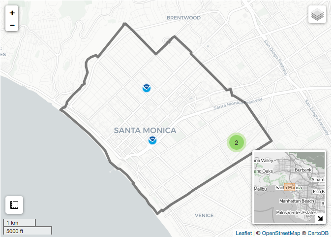
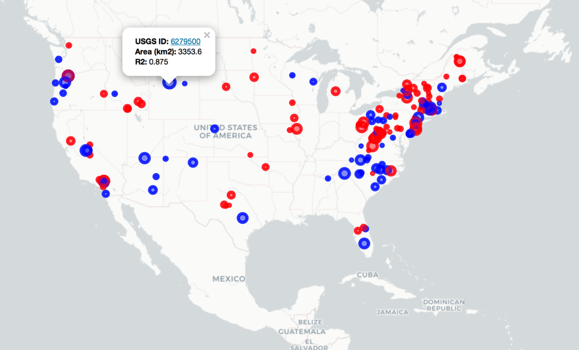
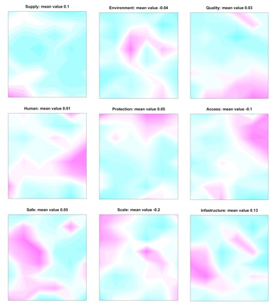
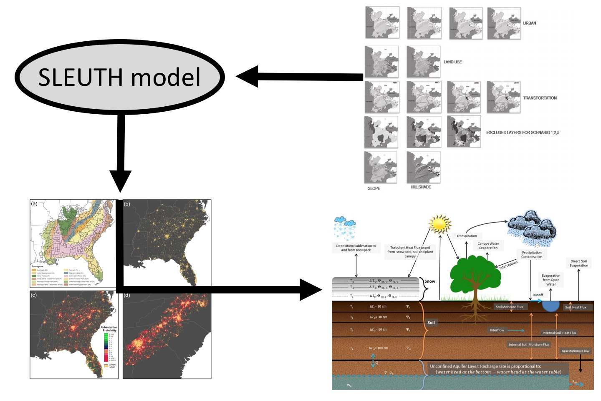
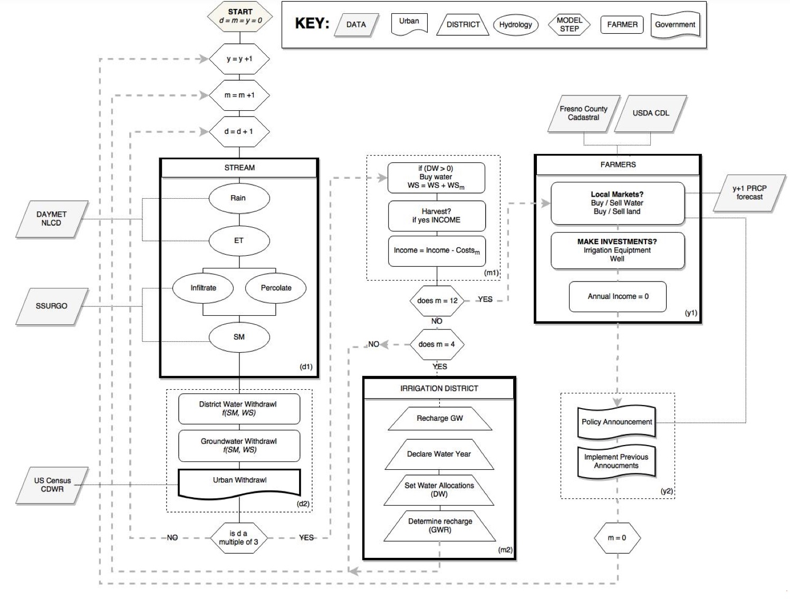

My name is J. Michael Johnson, but everyone calls me Mike. I am a graduate student in Geography at the University of California, Santa Barbara working with Keith C. Clarke.
My current research is focused on developing the HydroData Package, mapping California land use change, modeling evapotranspiration, and developing agent based models for drought risk analysis.
Before coming to UCSB, I spent two years studying architecture before earning my Bachelor of Science in Geography and Anthropology from Cal Poly in 2015, where I also received minors in GIS for Agriculture, Water Science, Statistics, Economics, and Environmental Studies.
Experience and Affiliations
University of California Santa Barbara
2015 - Present
PhD Candidate Geography
Passed written exams
Santa Barbara, California
Visiting Researcher
NCAR Research Applications Laboratory Aug-Sep 2018Boulder, CO VU Amsterdam IVM Jan-Mar 2018Amsterdam, The Netherlands
California Polytechnic State University
2010-2015
Bachelor of Science Anthropology & Geography
Minor Water Science (Watershed Management Emphasis) Minor Geographic Information Systems for Agriculture Minor Statistics Minor Environmental Studies Minor Economics
Cum laude
San Luis Obispo, CA
2018
COMET Partners Grant NOAA National Water Center ($15,000)
2017
UCGHI Planetary Health Center of Expertise Seed Grant ($10,000)
2017
Dangermond Travel Scholarship AGU ($800)
2017
National Water Center Course Coordinator CUASHI ($15,000)
Droughts are a persistent and costly hazard impacting human and environmental systems. As climate variability continues to increase and socio-economic development continues to change the distribution of exposed assets, drought risk is expected to increase in many parts of the world. The unique characteristics of droughts - namely their fuzzy edges, large spatial extent, prolonged temporal bounds, human-influenced propagation, and teleconnection potential – challenge the correct assessment of drought risk. Further complicating such assessment is the ability of humans to make adaptive decisions before, during, and after a drought event, altering the expected impact.
Current drought risk models often neglect how adaptation decisions can change drought hazard, exposure, and vulnerability, and how past and current experiences may influence behavior through time. Therefore, they provide a limited illustration of the actual drought risk dynamics. In this overview, we offer a framework for extending the traditional risk modeling approach by including the two-way feedback between heterogeneous adaptive behavior of different water users and drought exposure, vulnerability and hazard. We discuss how an agent-based, socio-hydrologic, modeling setup can facilitate such simulations. We suggest such a modeling approach can provide a test-bed for understanding optimal adaptive behaviors in an increasingly drought-prone world, allowing better prioritization of adaptation strategies in the face of an uncertain future.
Disasters evolving from hazards are a persistent and deadly occurrence in the United States. Despite this, hazard alerts have remained spatially vague, temporally imprecise, and lack actionable information. These deficiencies indicate a divide between the status quo and what is possible given modern environmental models, geographic information systems (GIS), and smartphone capabilities. This work describes an alternative, prototype system, “FloodHippo,” which integrates operational model outputs, cloud‐based GIS, and expanded communication channels to provide personal and interactive disaster alerts for floods. The precepts and methods underpinning FloodHippo apply equally to other disasters that evolve over space and time, presenting the opportunity for a more intelligent disaster response system. The development of such a system would not only minimize current shortcomings in disaster alerts but also improve resilience through individual action, along with community, academic, and federal cooperation.
A modified Green-and-Ampt model is formulated to quantify infiltration on sloping terrain underlain by homogeneous soil wetted by surficial water application. This paper's theory for quantifying infiltration relies on the mathematical statement of the coupled partial differential equations (pdes) governing infiltration and runoff. These pdes are solved by employing an explicit finite-difference numerical method that yields the infiltration, the infiltration rate, the depth to the wetting front, the rate of runoff, and the depth of runoff everywhere on the slope during external wetting. Data inputs consist of a water application rate or the rainfall hyetograph of a storm of arbitrary duration, soil hydraulic characteristics and antecedent moisture, and the slope's hydraulic and geometric characteristics. The presented theory predicts the effect an advancing wetting front has on slope stability with respect to translational sliding. This paper's theory also develops the 1D pde governing suspended sediment transport and slope degradation caused by runoff influenced by infiltration. Three examples illustrate the application of the developed theory to calculate infiltration and runoff on a slope and their role on the stability of cohesive and cohesionless soils forming sloping terrain.
Shallow translational slides are common in slopes during heavy rainfall. The classic model for the occurrence of translational slides in long slopes assumes rising saturation above a slip surface that reduces the frictional strength by decreasing the effective stress along soil discontinuities. The classic model for translational slope failure does not conform well to the nature of homogenous soils that do not exhibit discontinuities propitious to create perched groundwater over the soil discontinuity or slip surface. This paper develops an alternative methodology for the coupled numerical simulation of runoff and infiltration caused by variable rainfall falling on a slope. The advancing depth of infiltration is shown to affect the translational stability of long slopes subjected to rainfall, without assuming the perching of soil water over the slip surface. This new model offers an alternative mechanism for the translational stability of slopes that are saturated from the slope surface downwards. A computational example illustrates this paper’s methodology.
In August of 2016, the National Water Model became operational marking an unprecedented effort that rightfully challenges the way research can be done and the way hydro-intelligence can benefit society. This modeling framework has also introduced ways in which interdisciplinary research surrounding water resources can be done. By providing river forecasts for 2.7 million reaches within CONUS, the NWM provides a nerve center in which two previously distinct groups - ‘data generators’ and ‘data users’ - can unite to answer new questions in a time where population pressures and a changing climate make water management more paramount.
The reports published here represent the culmination of seven weeks of research, and present a platform not only for these students to continue pushing forward with their advisors, each other and the NWC, but for the rest of the community, whether ‘data-generators’ or ‘data-users’, to become more engaged in the development of the NWM.
Present‐day disaster alert systems are underdeveloped in relation to modern forecasting capabilities,
geospatial technologies, and telecommunications. Consequently, alerts are often spatially vague, temporally imprecise, and fail to provide actionable information, resulting in confusing warnings that are easily ignored.
This research describes the integration of predictive models into an Operational Platform for Emergency
Response Awareness (OPERA), colloquially known as the “Disaster Zoo”. The Disaster Zoo operates across the initial phases of a disaster event, including preparedness, warning, and response, by capitalizing on social media to promote awareness, leveraging Geographic Information System (GIS) techniques to improve
spatiotemporal accuracy, and cellular Global Position Systems (GPS) technology to deliver individualized
actionable alerts. Currently, the Disaster Zoo showcases alerts for floods, wildfires, and chemical spills; other disaster types may be considered in the future. This research is not intended to be a new approach to emergency response per se, but rather to reimagine emergency alert systems, demonstrate their improvements, and argue for their viability, and indeed, necessity.
Coll J.M, Johnson J.M, Ruess P.J.
Radar Measurement and Flow Modeling: Methods.
In National Water Center Innovators Program Summer Institute Report. Consortium of Universities for the Advancement of Hydrologic Science, Inc. Technical Report 13, Ch 1., 2016. PDF
Traditional river forecasting and hydraulic modeling is limited by the type, quantity and density of measurements available. Currently, the hydrologic community is reliant on a combination of USGS gages, remotely sensed data, and field work to model the hydrologic properties of a reach. However, if hyper resolution or continent‐scale modeling is undertaken, more data is necessary than the current network can provide. The most obvious way to improve upon this shortcoming is to implement a more densified measurement network; while USGS stations are the industry standard, they are too sparsely located and often not representative of the waterways they are being used to describe. An alternative sensor, the Sommer GmbH RQ‐30 radar, is more cost‐effective, measures both stage and velocity, and operates autonomously. This paper outlines the rationale and objectives behind the installation of these systems, describes two study sites where these instruments have been installed, lays out different methods to gather bathymetry data, and ultimately uses these data, combined with the sensors, to model the reaches.
International Congress on Environmental Modelling and Software
June 2018
An agent-based approach to evaluating sustainable drought adaptation policy - presentation
International Congress on Environmental Modelling and Software
June 2018
Simulating dynamic drought adaptation behavior of agricultural stakeholders using Agent-Based Models - presentation
EGU
April 2018
Integrating Adaption behavior in drought risk analysis - poster
AGU Fall Meeting
Dec 2017
HydroData: Discover Earth Systems Data with R - lightning talk/poster
Accessing National Water Model Output - presentation
UCGIS Webinar
Nov 2016
2017 CUAHSI SI: Collaborative Problem Solving at the National Water Center - presentation
HAZUS Users Conference
Nov 2106
Reimagining Disaster Alert Systems: OPERA - presentation
UCSB SDSU Retreat
Oct 2016
The Five Meanings of Water Security - presentation
NCAR
Aug 2016
FloodHippo and the National Water Model - presentation
CUASHI Biennial Conference
July 2016
Densified Radar Measurement and Flow Modeling - poster
California Geography Society 2016 Annual Conference
My 2016
Rising Temperatures and Water Supply: Tools for Water Security - presentation
UC Student Lobby Conference
April 2016
Water Research: Problems with Scale in Data-driven - presentation
California Geography Society 2015 Annual Conference
May 2015
Developing a Decision Support System for California Surface Water - presentation
Software
Aggregate and Visualize Earth Systems Data

CodeHomepage
Almost all environmental research begins with data; the question of what data is available; and the challenge of gathering it. HydroData is an R package designed to help users find, get, visualize and use a range of Earth Systems data for a defined Area of Interest. The package provides functions to automatically download data from 19 sources; interactively visualize and share data within R and/or a browser; and to export data for external use in GIS.
Current Work
Aggregation and Visualization of Earth Systems Data
Almost all environmental research begins with data; the question of what data is available; and the challenge of gathering it. HydroData is an R package designed to help users find, get, visualize and use a range of Earth Systems data for a defined Area of Interest. The package provides functions to automatically download data from 19 sources; interactively visualize and share data within R and/or a browser; and to export data for external use in GIS.

Evapotranspiration Data Analysis
Four projects look into modeling evapotranspiration across a continuous spatial surface within the contexts of the HydroData package. Specifically (1) how DAYMET and Weather Underground data can be used to calculate PET at a daily timesteps for North America; (2) how the same process can be applied globally; (4) how values – analogous to the FAO crop coefficients – can be developed for all vegetated Anderson level 2 land covers and (4) how to decouple the effect of temperature on ET rates using observed streamflow records.
Working with: Dami Eyelade, Jeremy Neill, Dino Korac
Flood Mapping
Three projects look at the feasibility of real-time flood mapping using R and the National Water Model. The first (1) is to develop a system that allows GIS agencies throughout the country to install and run an hourly flood impacts models using the HAND methodology, the second (2) is to evaluate the accuracy of the HAND method against a repository of satellite derived flood extents and the third (3) is develop a filtering scheme to identify abnormally low and high flows in a NWM forecast allowing decision-makers and modelers to focus on areas that need attention.
Working with: Jim Coll, Dinuke Munasinghe

Using Text-based Analysis to simplify the Water Secuirty Paradigm
Over the last 25 years the concept of water security has gained in popularity, but its meaning remains ambiguous despite several attempts to articulate a unified definition. This project seeks to better understand water security through a quantitative, text-based analysis of the literature to remove linguistic redundancies and overlap to identify core, timeless agreements.
Working with: Keith Clarke

Urban Growth Modeling
This study looks to apply the SLEUTH land use/land cover model to the state of California to derive high resolution, probabilistic, long-range, Anderson level 2 land use products. Such products will be used for scenario-based hydroclimate studies with the NCAR Research Application Laboratory.
Working with: Keith Clarke

Agent-based Drought Risk Models
This work is part of a larger study being carried out at the Institute for Environmental Studies at VU Amsterdam looking to couple distributed hydrologic models and multi-actor, agent-based behavioral models within a drought risk context. One case study looks at applying this modeling strategy to a region in California’s Central Valley to better understand impacts on ground water withdrawals and aquifer levels.
Working with: Marthe Wens, Jeroen Aerts, Ted Veldkamp